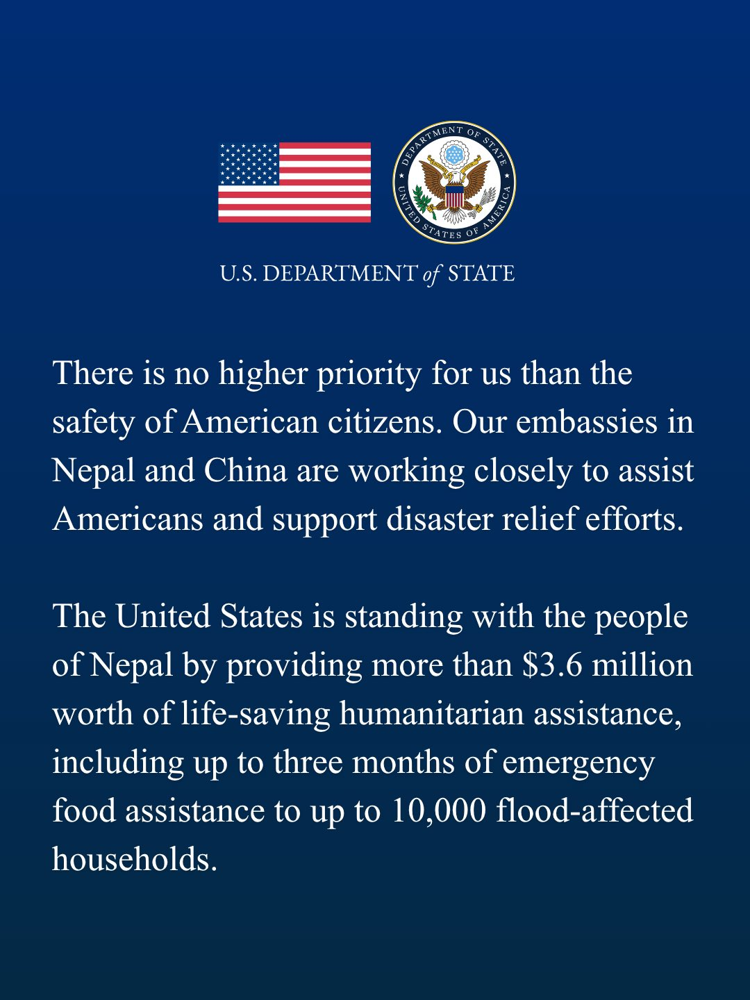
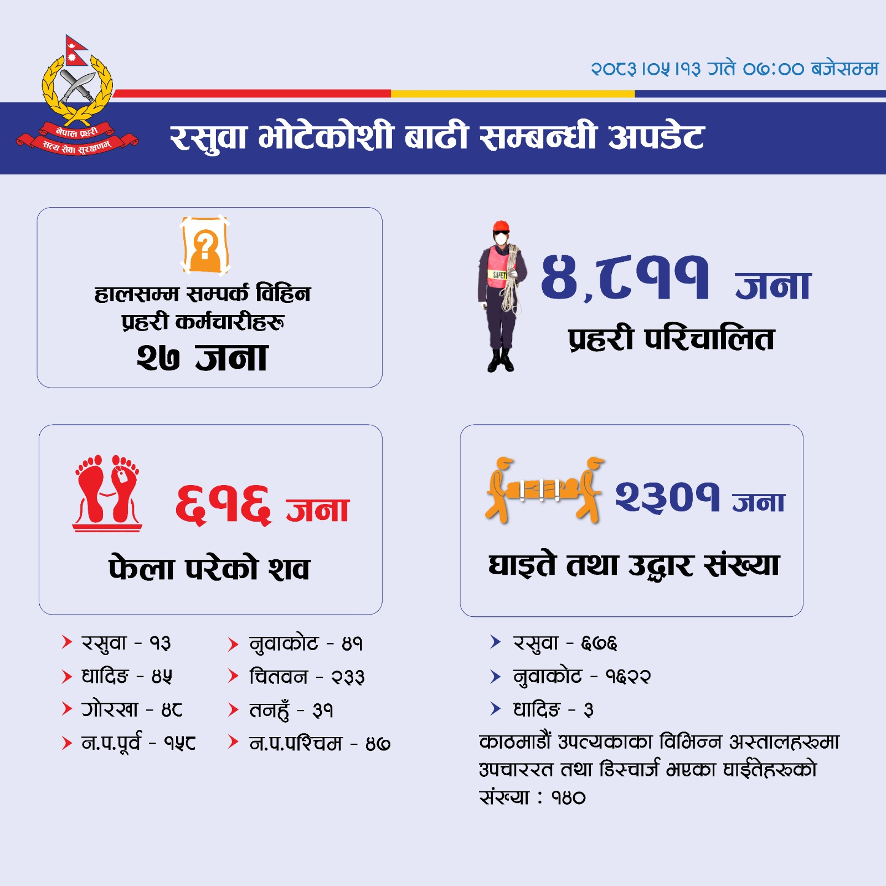

« ड्यासबोर्ड
अमेरिका · State · $३.६ मिलियनजीवनरक्षा सहयोग · १०,००० घरधुरी · ३ महिना खाद्यान्न · कोष ६५५ माथि होइन
नेपाल प्रहरी · १३ भदौ ०७:००शव ६१६ · घाइते तथा उद्धार २३०१ · प्रहरी ४८११ · सम्पर्कविहीन २७

नेपाल प्रहरी · १२ भदौ १५:००शव ५४७ · घाइते तथा उद्धार १४७३ · प्रहरी ४४७३ · सम्पर्कविहीन २७

त्रिशूली-१ · भारतीय उद्धार ६३List of Indians rescued from the Trishuli-I Project

नेपाल प्रहरी · शव ३८९प्रहरी · २१:०० · ११ भदौ · आधिकारिक इन्फोग्राफिक

भारत · दोस्रो HADR उडानजयशंकर · ११ भदौ · ३७.५ टन

HADR सामग्री · प्यालेटजयशंकर · ११ भदौ · औषधि/खाद्यान्न

NDRRMA SitRep-3 · शव १२३विपद् प्राधिकरण · राति १०:०० · आधिकारिक इन्फोग्राफिक

फुर्के पुल बगेपछि सडकसेतोपाटी · आज · धादिङ

फुर्के · लेदो टापुसेतोपाटी · आज · धादिङ

फुर्के पुल डुबानसेतोपाटी · आज · धादिङ

फुर्केखोला पुल भत्किँदैसेतोपाटी · आज · धादिङ

फुर्के पुलमाथि बाढीसेतोपाटी · आज

फुर्के पुल · माथिल्लो दृश्यसेतोपाटी · आज

आदमघाट बाढीसेतोपाटी · आज · धादिङ

आदमघाट उपत्यकासेतोपाटी · आज

त्रिशूली बर्ड भ्यू · नहरसेतोपाटी · आज

त्रिशूली · ट्रक लेदोमाअनलाइनखबर · आज

त्रिशूली बर्ड भ्यूरातोपाटी · आज · सुर्याम्स उप्रेती

त्रिशूली बजारअनलाइनखबर · आज · घर लेदोमा

त्रिशूली · घरअनलाइनखबर · आज

त्रिशूली · दोस्रो तलाअनलाइनखबर · आज

त्रिशूली · टिप्परअनलाइनखबर · आज

त्रिशूली · बजारअनलाइनखबर · आज

त्रिशूली · लेदो घरअनलाइनखबर · आज

त्रिशूली · स्थानीयअनलाइनखबर · आज

त्रिशूली · उपत्यकाअनलाइनखबर · आज

नुवाकोट विदुररातोपाटी · आज · घर लेदोमा

विदुर · ट्रकरातोपाटी · आज

विदुर किनाररातोपाटी · आज

विदुर · त्रिशूलीरातोपाटी · आज

विदुर · सर्दैरातोपाटी · आज

नुवाकोट ढुंगेबजारअनलाइनखबर · आज · घर लेदोमा

ढुंगेबजार घरहरूअनलाइनखबर · आज

ढुंगेबजार · सुरक्षाकर्मीअनलाइनखबर · आज

धादिङ बैरेनी बजारअनलाइनखबर · आज · घर/टहरा/झोलुंगे क्षति

बैरेनी बहावअनलाइनखबर · आज

बैरेनी लेदोअनलाइनखबर · आज

बैरेनी सडकछेउअनलाइनखबर · आज

बैरेनी बजार डुबानअनलाइनखबर · आज

स्याफ्रुबेसी उपत्यकाअनलाइनखबर · सेनाको ७ जना उद्धार रिपोर्ट

स्याफ्रुबेसी / भोटेकोशी बाढीकाठमाडौं पोस्ट · आज

भोटेकोशीको बहावआज बिहानको दृश्य

रसुवा बाढीअनलाइनखबर · आज

टिमुरे बाढीको बहावरातोपाटी · आज

बाढीको लेदोमा घरहरूअनलाइनखबर · नुवाकोट क्षति रिपोर्ट

उपत्यकामा बाढी र लेदोअनलाइनखबर · «के-के क्षति भयो?»

प्रहरी कार्यालय क्षतिअनलाइनखबर · टिमुरे, स्याफ्रुबेसी, रसुवागढी

प्रहरी सतर्कता भिडियो@NepalPoliceHQ · आज बिहान

नागरिक भिडियो फ्रेम@saalik3783 · घरछेउको बाढी

रातोपाटी कोलाजआजको बाढी कवरेज
तस्बिर र भिडियो
आज २६ अगस्ट २०२६ को घटना · जाँचिएका तस्बिर र भिडियो
तस्बिर · आज २६ अगस्ट २०२६ मात्र


भिडियो
बिजपाटी · TEN TV · गोपनीयता-सुरक्षित युट्युब एम्बेड
नेपाल प्रहरी आधिकारिक भिडियो
@NepalPoliceHQ · भोटेकोशीमा तिब्बततर्फबाट आएको बाढी
@NepalPoliceHQ · भोटेकोशीमा तिब्बततर्फबाट आएको बाढी
नागरिक भिडियो
@saalik3783 · बस्तीछेउ भीषण बाढी
@saalik3783 · बस्तीछेउ भीषण बाढी